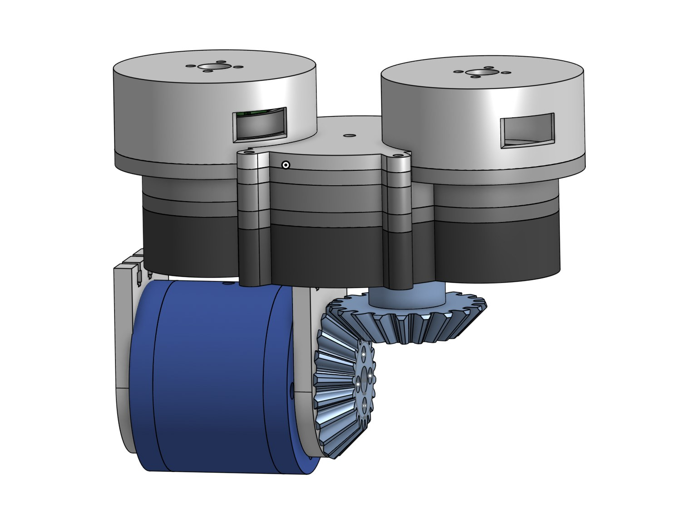
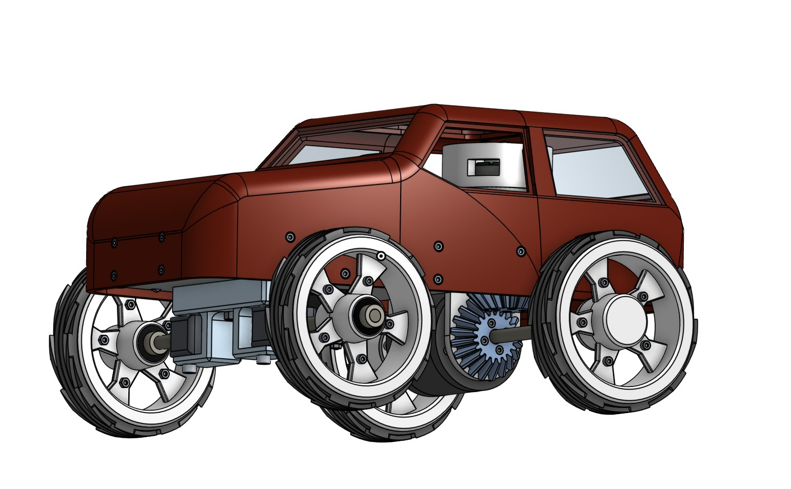

A small rover I designed in CAD and built around a 3D-printed bevel-gear differential, with a 3D-printed body and wheels.
- Date
- 2023
- Tools
- CAD, 3D printing

Differential

The rover drives through a 3D-printed bevel-gear differential, which lets the wheels on each side turn at different speeds through a turn.
Full Assembly

The finished rover was then tested outdoors, as shown in the video at the top of this page.